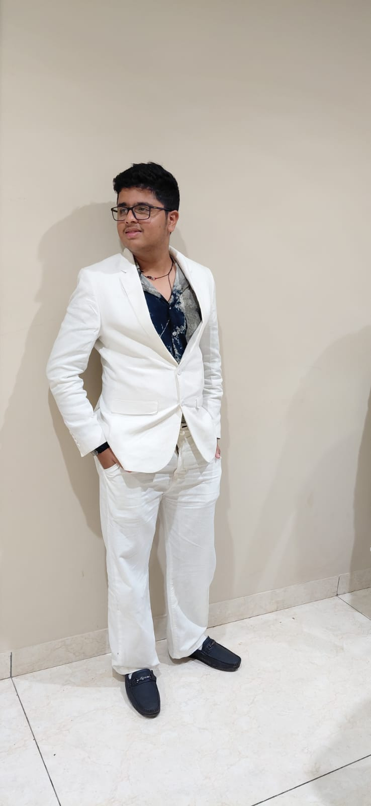

Hello! I’m Aviral Gandhi, a dedicated and passionate programmer, web developer, and tech enthusiast. I am currently pursuing my BCA and have been deeply involved in exploring web development, Python programming, and AI. Over the years, I have honed my skills in creating clean, modern, and responsive websites with intuitive user interfaces and smooth experiences.
Beyond programming, I have a strong inclination toward digital marketing, combining creativity with strategic thinking. I have managed small digital campaigns, explored SEO, social media marketing, and content management, ensuring my tech solutions are commercially viable.
Communication and leadership are my core strengths. I enjoy collaborating with diverse teams, mentoring juniors, and leading small projects. I have participated in several hackathons, coding competitions, and Toastmasters, gaining accolades for innovative solutions and teamwork.
I am constantly learning new technologies, experimenting with AI models, and currently working on an internship project that involves web-based AI solutions and automation tools. I love trying new frameworks, experimenting with design patterns, and pushing my knowledge limits.
Outside of tech, I am an avid fan of Marvel movies and Iron Man. I enjoy drawing inspiration from creative stories and visual effects, which influence my approach to building interactive interfaces.
Currently, I focus on producing smart web applications, AI-based solutions, and user-friendly interfaces. I aim to grow as a full-stack developer while enhancing skills in digital marketing, leadership, and communication. I am enthusiastic about collaborating on innovative projects and making an impact in the digital space.
Back to Home